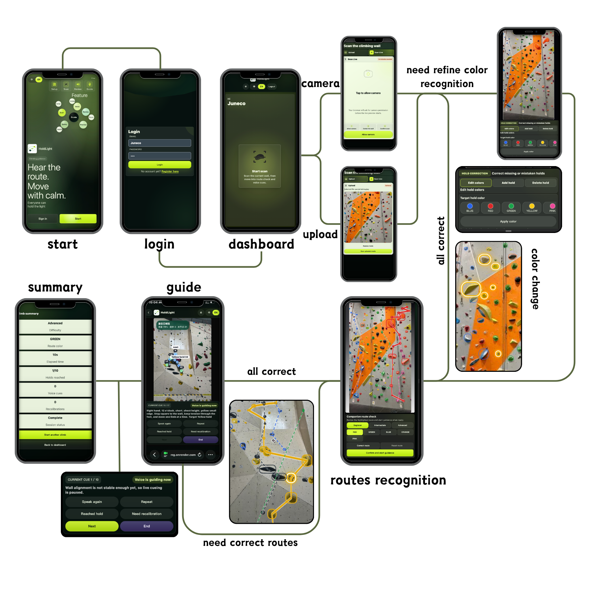
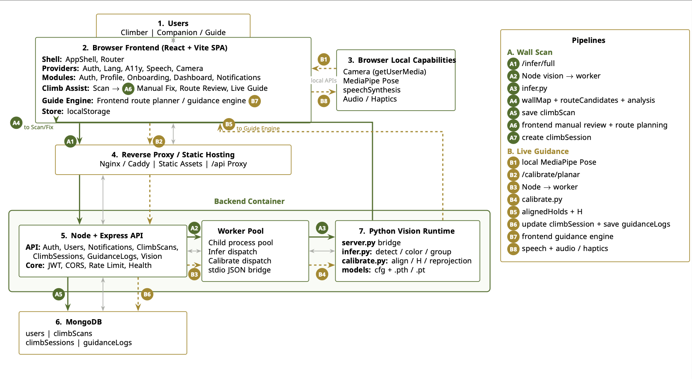

01
03.06Team Formation
The project team was created and the initial collaboration structure was confirmed.
This stage established the basis for user research, UX design, frontend development, backend logic, and evaluation work.


| Member | Main Role Areas | Code / System Contribution | Design / Research / Content Contribution | Testing / Documentation Evidence |
|---|---|---|---|---|
|
Chenyu Du
|
Frontend/Backend
Computer Vision
Route Planning
Accessibility
Deployment
User Research
|
|
|
|
|
Junyan He
|
UI/UX Design
Inclusive Interface
Portfolio Website
Internal Testing
Poster Assets
|
|
|
|
|
Jiafei Sun
|
Human Pose Recognition
Technology Evaluation
Technical Testing
Research Support
Poster Visuals
|
|
|
|
|
Youming Yang
|
Market Research
Evaluation Support
User Testing
Data Organization
Documentation
|
|
|
|
From Research Insight to Final Prototype
The project team was created and the initial collaboration structure was confirmed.
This stage established the basis for user research, UX design, frontend development, backend logic, and evaluation work.
The team confirmed the core product direction: an accessible climbing support system for blind and low-vision users.
The design focus shifted toward route preview, brief voice guidance, explicit fallback, and inclusive interaction flow.
The first BLV interview helped the team understand route-reading barriers, audio guidance needs, and uncertainty during climbing.
The team then divided responsibilities across frontend, backend, research, inclusive UX design, and testing preparation.
The first frontend-backend integration produced an initial working prototype with a connected scan-to-guidance flow.
This made it possible to test whether route preview, cue delivery, and fallback could work as one coherent user journey.
The first pilot test with a BLV participant showed that long voice instructions were difficult to process during climbing.
Iteration 1 simplified the audio wording into shorter, direction-first cues and reduced unnecessary guidance details.
Internal team testing revealed that several interface areas were visually overloaded and not clear enough for quick use.
Iteration 2 simplified the interface and made the main scanning, preview, and guidance actions easier to identify.
A second BLV test and interview exposed the need for faster hold correction during route setup.
Iteration 3 added multi-select controls for adding or removing detected climbing holds more efficiently.
The final version was polished through interface tuning, flow adjustment, and interaction cleanup.
The product was prepared as a more stable and presentable accessibility-focused climbing prototype for final submission.

The main journey begins with route scanning rather than a dense dashboard, making the core task easier to find.
The flow supports route preview, route correction, short guidance, and recovery controls.
The final prototype reduces feature density and focuses on the moments that matter for blind and low-vision beginner climbers.
User problem: route shape is hard to access visually.
Implemented feature: camera scan, route confirmation, and simplified preview.
Requirement supported: confidence-building route preview.
Current limitation: recognition still needs confirmation in real gym conditions.
User problem: screen prompts are not practical while climbing.
Implemented feature: concise Web Speech API cue output with repeat and pause.
Requirement supported: low-overload audio guidance.
Current limitation: noisy gym environments may still reduce comprehension.
User problem: uncertainty can become unsafe or confusing.
Implemented feature: text size, contrast, repeat, pause, and request-help controls.
Requirement supported: safe fallback and recovery.
Current limitation: human support is still required for safety-critical decisions.
HoldLight is structured as a mobile-first web application that combines browser-side interaction with backend vision processing. The React + Vite frontend manages authentication, onboarding, dashboard, accessibility, speech, camera access, and the Climb Assist flow. Local browser capabilities such as getUserMedia, MediaPipe Pose, speech synthesis, audio, and haptics support real-time interaction on the user's device. Requests are routed through static hosting and an API proxy to a Node + Express backend, which handles users, notifications, climb scans, climb sessions, guidance logs, and vision requests. A Python vision runtime performs wall detection, hold grouping, color analysis, and planar calibration, while MongoDB stores user, scan, session, and guidance data. The system supports two main pipelines: wall scanning and live guidance.

/ai-logs with placeholder prompt documentation to be completed before final submission.